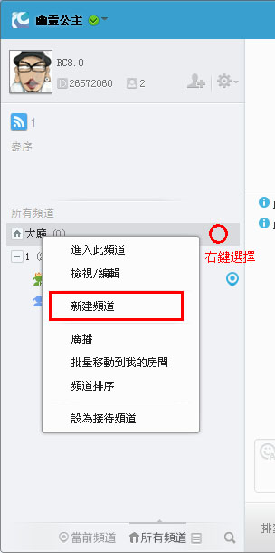
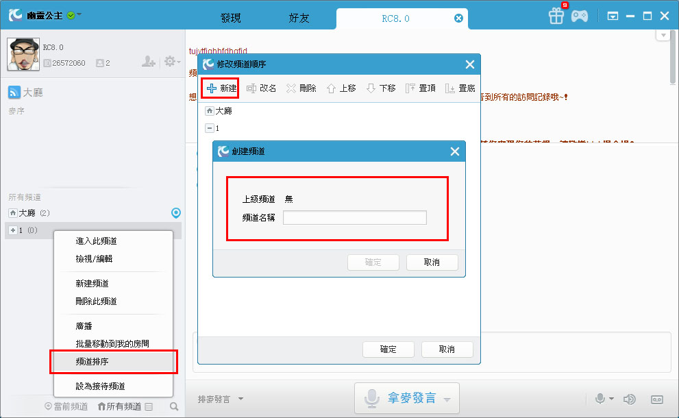
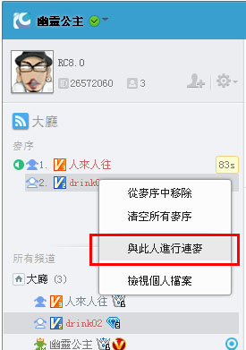
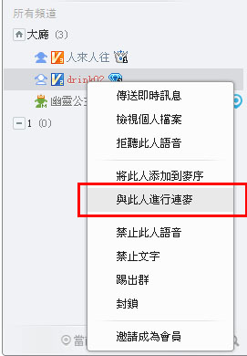

1. 想丰富专属个人语音群内容吗？
RC语音支援语音群创建者/管理员新建/删除频道功能，创建者/管理员可以根据语音群内部需要，随意创建一级频道/二级频道，各一级频道/二级频道之间语音独立，创建者/管理员也可以给频道加密，禁止没有相关许可权的用户进入。
2. 怎么创建一个频道？
创建语音群后，创建者和群管理员可随意在群内新建一级频道。按右键选择创建，输入频道名称后点击确定；你也可以在语音群内的'频道管理'创建一级频道。


3. 怎么删除一个频道？
如果你想删除频道，可直接选择需删除的频道，按右键选择'删除'，或者在语音群内的'频道管理'选项进行删除频道的操作。
4. 怎么设置频道密码？
1) 如果你希望在创建好的一级频道/二级频道内设置一个密码，可点击频道名，右键点选"检视/编辑"，在基本资料中设置频道密码。
5. 如何使用频道排序？
右键选择频道排序，在弹出窗口中使用'上移''下移'功能进行频道排序；也可以在左下角的'频道管理'通道进行排序操作。
6. 如何使用频道广播？
点击当前频道名称,按右键选择频道广播，在弹出视窗中编辑广播内容，进行广播。
7. 如何设定信息提示？
点击频道名称，按右键点选'检视/编辑'，在选项基本资料勾选'此频道不许任何人进入（只用于信息显示）。
8. 怎么允许/禁止一个会员说话？
在当前频道点选一个会员，按滑鼠右键，勾选'禁止此人语音'，可允许/禁止该会员说话，频道内所有成员都将听不到被禁止语音的会员的说话。
9. 什么是接待频道？
接待频道由语音群管理员设定，它可以是大厅以外的任意一个频道，名称在语音群内显示为红色。
用户进入设有接待频道的语音群时，会自动进入到接待频道，但通过好友中的频道动态进入语音群时不受接待频道影响。
10. 如何设定频道的发言模式？
管理员对需要修改发言模式的频道进行"检视/编辑"，在频道基本资料选定发言模式，最后按"保存"。
11. 什么是连麦功能？
连麦是在排麦模式下实现多人同时上麦说话的目的，满足主持人与嘉宾互动、朋友合唱、互动聊天，多人会谈等场景需要。连麦功能主要针对社群管理员使用，管理员可以向麦序成员发起邀请，同时，也可以向语音中的其他成员进行邀请，被邀请的人即可直接被连麦，连麦成功后即可与其他连麦成员进行多人说。如下图：
12. 如何邀请连麦？
在排麦模式下，社群管理员，在麦序例表中，通过点击受邀人的右键选单中的"邀请连麦"项，对受邀人发送连麦邀请。如下图：
|  |  |
| 【邀请麦序成员进行连麦】 | 【邀请社群成员进行连麦】 |
点击邀请连麦麦序中会出现连麦区，在连麦区中可以看到管理员所邀请的人，如果要管理操作连麦区中的人，可以通过滑鼠左键点击大头贴即会出现管理选项。
14. 如何管理连麦？
社群管理员在连麦框中通过滑鼠左键点击大头贴，即可弹出管理选项，在选项中可以对连麦成员进行管理。